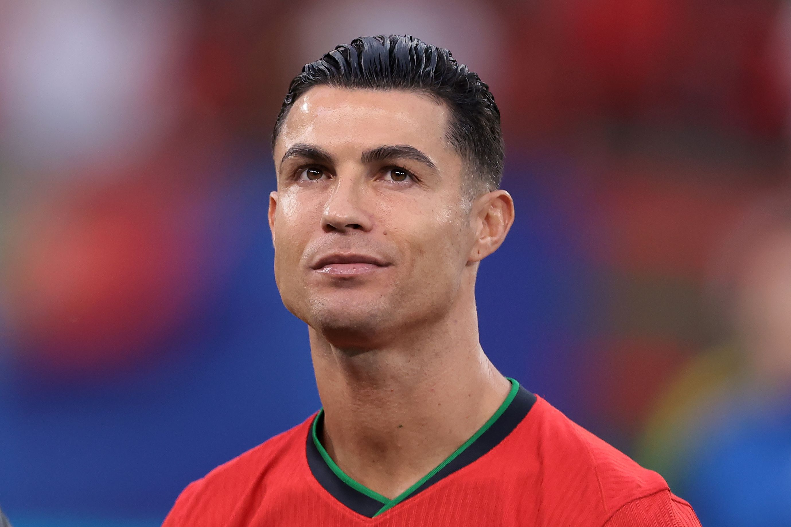

The Journey of Cristiano Ronaldo
"Your love makes me strong, your hate makes me unstoppable."
Early Life
Cristiano Ronaldo was born on February 5, 1985, in Madeira, Portugal. His humble beginnings laid the foundation for his unrelenting work ethic and drive to succeed.
Football Career
| Year | Event |
|---|---|
| 1985 | Born in Madeira, Portugal |
| 2003 | Joined Manchester United |
| 2008 | Won his first Ballon d'Or |
| 2009 | Transferred to Real Madrid |
| 2016 | Won Euro 2016 with Portugal |
| 2018 | Transferred to Juventus |
| 2021 | Returned to Manchester United |
| 2023 | Signed with Al-Nassr and became the first player to reach 850 career goals |
Achievements and Records
- Most international goals scored by a player (currently over 125 goals for Portugal).
- Five-time Ballon d'Or winner (2008, 2013, 2014, 2016, 2017).
- All-time top scorer for Real Madrid with 450 goals.
- First player to score in five different FIFA World Cups (2006, 2010, 2014, 2018, 2022).
- Most UEFA Champions League goals (141 goals).
- Multiple league titles: English Premier League (Manchester United), La Liga (Real Madrid), Serie A (Juventus).
Recent Highlights
In 2023, Ronaldo joined Al-Nassr in Saudi Arabia, making headlines by reaching a milestone of 850 career goals. He continues to be a global icon, inspiring millions with his performances on and off the field.